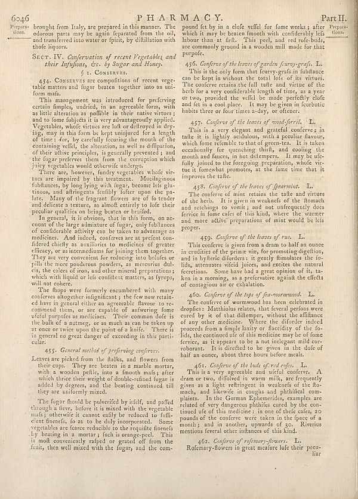

Scan ID britannica:309f765b1ecc83e0a7f7762e44b4a927a7555443:train:1942
Image SHA-256 99b5dc3b4c6cd19e10ef2da5ff4549329115fd8dba02d32d04fb855d1c774164
Status: ok. Running header: none (none). Removed page furniture: Page-header: 6046.
PDF · raw Parse reply · LaTeX
Entries: PHARMACY

| # | Class | Box | Parse 3.5 | Used text | Source |
|---|---|---|---|---|---|
| 1 | Title | [0.3779, 0.0258, 0.623, 0.0445] | PHAR MACY. | PHARMACY. | super_vl |
| 2 | Section-header | [0.8906, 0.0273, 0.9707, 0.0461] | Part II. | Part II. | super_vl |
| 3 | Caption | [0.0254, 0.0469, 0.0781, 0.0727] | Prepara- tions. | Prepara- tions. | super_vl |
| 4 | Text | [0.082, 0.0578, 0.0898, 0.1] | brought from Italy, are prepared in this manner. The odorous parts may be again separated from the oil, and transferred into water or fpirit, by distillation with those liquors. | brought from Italy, are prepared in this manner. The odorous parts may be again separated from the oil, and transferred into water or fpirit, by distillation with those liquors. | parse_fallback · box_too_small |
| 5 | Section-header | [0.0811, 0.1062, 0.4912, 0.1375] | Sect: IV. _Conferration of recent Vegetables and_ _their Infusions, etc. by Sugar and Honey._ | SECT. IV. Conservation of recent Vegetables and their Infufions, &c. by Sugar and Honey. | super_vl |
| 6 | Section-header | [0.2227, 0.1391, 0.3604, 0.1531] | § 1. CONSERVES. | § 1. CONSERVES. | super_vl |
| 7 | Text | [0.0869, 0.1547, 0.4883, 0.1938] | 454. CONSERVES are compollions of recent vege table matters and fugar beaten together into an uni- form mafs. | 454. CONSERVES are compositions of recent vegetable matters and sugar beaten together into an uniform mass. | super_vl |
| 8 | Text | [0.085, 0.1945, 0.4893, 0.3383] | This management was introduced for preferving certain samples, undried, in an agreeable form, with as little attention to poblin in their native viruses; and to fome subjects it is very advantageously applied. Vegetables, whole virus use all or delivered in dry- ing, except in this form be kept unjusted for a length of time; For, by carefully focusing the mouth of the containing wells, the alteration, as well as diffusion, of their either principles, is generally prevented, and the fugar preserves them from the corruption which joley vegetable would otherwise undergo. | This management was introduced for preserving certain samples, undried, in an agreeable form, with as little alteration as possible in their native virtues; and to some subjects it is very advantageously applied. Vegetables, whose virtues are lost or destroyed in drying, may in this form be kept uninjured for a length of time: for, by carefully securing the mouth of the containing vessel, the alteration, as well as diffusion, of their active principles, is generally prevented; and the sugar preserves them from the corruption which juicy vegetables would otherwise undergo. | super_vl |
| 9 | Text | [0.0859, 0.3391, 0.4902, 0.5742] | There are, however, fundry vegetables whole vi- tous are impaired by this treatment. Muchaginous fubilances, by long lying with fugar, become leis glu- tionus, and that甚antly fully follow them the pa- late. Many of the fingers flowers are of to tender and delicate a texture, as almost entirely to lode their peculiar qualities on being been on brushed in general. It is obvious, that in this form, on ac- count of the large admixture of fugar, only fulbliances of considerable activity can be taken to advantage as medicines. And indeed, conferve are at perfect con- fidered chiefly as auxiliaries t | There are, however, sundry vegetables whole vi- tous are impaired by this treatment. Muchaginous fubilances, by long lying with sugar, become leis glu- tionus, and that甚antly fully follow them the pa- late. Many of the fingers flowers are of to tender and delicate a texture, as almost entirely to lode their peculiar qualities on being been on brushed in general. It is obvious, that in this form, on ac- count of the large admixture of sugar, only fulbliances of considerable activity can be taken to advantage as medicines. And indeed, conserve are at perfect con- fidered chiefly as auxiliaries t | super_vl |
| 10 | Text | [0.084, 0.575, 0.4873, 0.6906] | The flops were formerly ecumulated with many conferences altogether insignificant; the few now retain- ed have in general either an agreeable flavour to re- commend them, or are capable of answering some ofeful purpose as medicine. Their common dole is the bulk of a nutmey, or as much as can be taken up at once or twice upon the point of a knife. There is in general no great danger of exceeding in this parti- cular. | The slops were formerly encumbered with many conferences altogether insignificant; the few now retain- ed have in general either an agreeable flavour to re- commend them, or are capable of answering some useful purpose as medicine. Their common dole is the bulk of a nutmeg, or as much as can be taken up at once or twice upon the point of a knife. There is in general no great danger of exceeding in this parti- cular. | super_vl |
| 11 | Section-header | [0.1309, 0.6937, 0.4453, 0.7109] | 455. _General method of preferring conferences_. | 455. General method of preferring conferences. | super_vl |
| 12 | Text | [0.0879, 0.7117, 0.4863, 0.7961] | Leaves are picked from the flalks, and flowers from their crops. They are beaten in a marble mortar, with a wooden peille, into a smooth mafs after which three there weight of double-refined fugar is added by degrees, and the beating continued till they are uniformly mixed. | Leaves are picked from the stalks, and flowers from their cups. They are beaten in a marble mortar, with a wooden pestle, into a smooth mass; after which thrice their weight of double-refined sugar is added by degrees, and the beating continued till they are uniformly mixed. | super_vl |
| 13 | Text | [0.0889, 0.7984, 0.4854, 0.9055] | The fugar should be pulverified by infilt, and patfed through a fleeve, before it is mixed with the vegetable mafs; otherwise it cannot easily be reduced to folfix- cleine friends, fo as to be daily incorporated. Some vegetables are cause reducible to the requisite finerals by beating in a mortar; fuch is orange-peel. This is molt conveniently raffed or grated off from the finis, then well mixed with the fugar, and the com- | The sugar should be pulverized by itself, and passed through a sieve, before it is mixed with the vegetable mass; otherwise it cannot easily be reduced to sufficient fineness, so as to be duly incorporated. Some vegetables are scarce reducible to the requisite fineness by beating in a mortar; such is orange-peel. This is most conveniently rasped or grated off from the fruit, then well mixed with the sugar, and the com- | super_vl |
| 14 | Text | [0.5098, 0.0477, 0.9062, 0.1141] | pound fet by in a clole veffel for fome weeks; after which it may be beaten Smooth with confidierably leis labour than at frift. This peel, and red role-buds, are commonly ground in a wooden mill made for that purpole. | pound fet by in a close vessel for some weeks ; after which it may be beaten smooth with considerably less labour than at first. This peel, and red rose-buds, are commonly ground in a wooden mill made for that purpose. | super_vl |
| 15 | Section-header | [0.5117, 0.1195, 0.9023, 0.1367] | 456. _Conferve of the leaves of garden fuancy-grafs_. L. | 456. Conserve of the leaves of garden fourvy-grass. L. | super_vl |
| 16 | Text | [0.5078, 0.1359, 0.9072, 0.2305] | This is the only form that feury-grafs in futultance can be kept in without the total line of its virtues. The conferve retains the full suite and virtue of the herb for a very conferable length of time, as a year two, provided the veffel be made perfectly cleo and ice in a cool place. It must be given in Ecurbotic habits three or four times a-day, so efficient. | This is the only form that feury-grass in futultance can be kept in without the total line of its virtues. The conserve retains the full suite and virtue of the herb for a very conferable length of time, as a year two, provided the vessel be made perfectly cleo and ice in a cool place. It must be given in Ecurbotic habits three or four times a-day, so efficient. | super_vl |
| 17 | Section-header | [0.5293, 0.2375, 0.8838, 0.2531] | 437. _Conferve of the leaves of wood-forrel_. L. | 457. Conserve of the leaves of wood-sorrel. L. | super_vl |
| 18 | Text | [0.5088, 0.2539, 0.9082, 0.3609] | This is a very elegant and grateful conferve y in talte it is lightly cushion, with a peculiar flavory which home refranchise totals of green-taa. It is taken because for quenching thirk, and cooling the mouth and fauces, in hot distempers. It may be uife- fully joined to the foregoing preparation, whole vic- ture to fomelan promotes, at the same time that it improves the taille. | This is a very elegant and grateful conserve; in taste it is lightly acidulous, with a peculiar flavour, which some resemble to that of green-tea. It is taken occasionally for quenching thirst, and cooling the mouth and fauces, in hot distempers. It may be usefully joined to the foregoing preparation, whose virtue it somewhat promotes, at the same time that it improves the taste. | super_vl |
| 19 | Section-header | [0.5273, 0.3664, 0.8691, 0.3812] | 458. _Conferve of the leaves of jewarmist_. | 458. Conserve of the leaves of spearmint. I. | super_vl |
| 20 | Text | [0.5068, 0.3828, 0.9092, 0.4625] | The conferve of mini retains the safe and virtues of the herb. It is given in weakouts of the stomach and perhaps to omit; and not unfrequently deea fervice in fome cafes of this kind, where the warmer and more active preparations of mini would be leis proper. | The conserve of mint retains the taste and virtues of the herb. It is given in weaknesses of the stomach and retchings to vomit; and not unfrequently does service in some cases of this kind, where the warmer and more active preparations of mint would be less proper. | super_vl |
| 21 | Section-header | [0.5615, 0.4664, 0.8545, 0.4828] | 459. _Conferve of the leaves of rugs_. L. | 459. Conserve of the leaves of rue. L. | super_vl |
| 22 | Text | [0.5059, 0.4844, 0.9043, 0.5773] | This conferve is given from a dram to half an ounce in crudities of the prime via, for promoting digestion, and in by their disorders; I gently illuminate the fo- lids, attenuates vital juices, and excites the natural feecretions. Some have had a great opinion of it, ta- ken in a morning, as a preferative against the effects of contagious air or calitation. | This conserve is given from a dram to half an ounce in crudities of the prime via, for promoting digestion, and in hysteric disorders: it gently stimulates the fo- lids, attenuates viscid juices, and excites the natural secretions. Some have had a great opinion of it, ta- ken in a morning, as a preservative against the effects of contagious air or exhalation. | super_vl |
| 23 | Section-header | [0.5283, 0.582, 0.8799, 0.5977] | 460. _Conferve of the tops of jau-mesorwood_. L. | 460. Conference of the tops of sea-wormwood. L. | super_vl |
| 24 | Text | [0.5049, 0.5984, 0.9053, 0.7164] | The conferve of wormwood has been celebrated in droplets. Mathihulus relates, that several persons were cured by it of that diltemper, without the diffiance of any other medicine. Where the diforder indeed proceeds from a simple laxity or flagidity of the fo- lids, the contained use of this medicine may be of bone ferives, as it appears to be a not malignant mild cor- robranant. It is directed to be given in the dole of half an ounce, about three hours before meals. | The conserve of wormwood has been celebrated in dropsies: Matthiolus relates, that several persons were cured by it of that distemper, without the assistance of any other medicine. Where the disorder indeed proceeds from a simple laxity or flaccidity of the fo- lids, the continued use of this medicine may be of some service, as it appears to be a not inelegant mild cor- roborant. It is directed to be given in the dose of half an ounce, about three hours before meals. | super_vl |
| 25 | Section-header | [0.5264, 0.7242, 0.8457, 0.7375] | 461. _Conferve of the buds of red refer_. | 461. Conserve of the buds of red roses. L | super_vl |
| 26 | Text | [0.5039, 0.7383, 0.9033, 0.8695] | This is a very apparent and useful concre. A dram or two, diluted in warm milk, are frequently given as a light refrigerant in weakness of the blo- month, and likewise in couple and phithical com- plaints. In the German Ephemerides, examples are related of very dangerous phihifies cured by the con- tinned out of this medicine; in one of the cafes, zo pounds of the conferve were taken in the face of a month; and in another, upwards of go. Riverius mentions federal other influences of this kind. | This is a very agreeable and useful conserve. A dram or two, diluted in warm milk, are frequently given as a light refrigerant in weaknesses of the stomach, and likewise in coughs and phthisical complaints. In the German Ephemerides, examples are related of very dangerous phthises cured by the continued use of this medicine: in one of these cases, 20 pounds of the conserve were taken in the space of a month; and in another, upwards of 30. Riverius mentions several other instances of this kind. | super_vl |
| 27 | Section-header | [0.542, 0.8742, 0.8418, 0.8891] | 461. _Conferve of refractory-flowers_. L. | 462. Conference of rosemary-flowers. L. | super_vl |
| 28 | Text | [0.5029, 0.8867, 0.9014, 0.9141] | Rofernary-flowers in great incature loft their pecu- liar | 462. Conference of rosemary-flowers. L. Rosemary-flowers in great measure lose their peculiar | super_vl |
Britannica scans: National Library of Scotland, CC0 1.0. Wikipedia text: Wikipedia contributors, CC BY-SA 4.0, revision links on each page. Generated 2026-10-18T13:26:14+00:00.